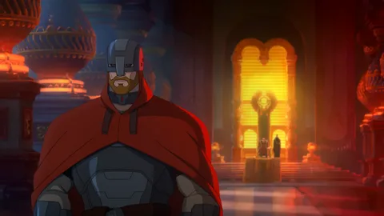
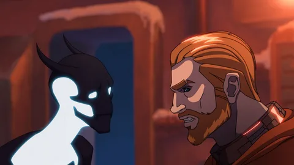

История персонажа от первого лица
Здрав будьте, люди добрые! Это я, Святослав, перед вами стою! Хоть и молод я еще, да кровь
богатырская во мне кипит. Не простой я парень, а потомок славных витязей земли русской, может, и
самого Ильи Муромца!.
Глядите, во что одет: вроде кольчуга, да не простая, а с
кибер-вставками. Современные доспехи,
как говорится. И меч у меня не обычный, а лазерный, чтоб супостата насквозь пронзать!


Силы во мне богатырской - немерено! Да еще и кибер-штучки всякие есть. Могу ими силу свою умножить, защиту усилить, да и техникой всякой управлять. В общем, я – богатырь нового времени, где старина с будущим переплелись. Так что ждите, люди, дел славных! Не посрамлю землю русскую!